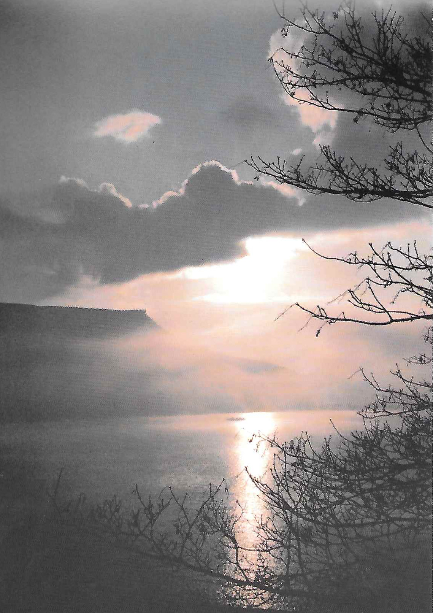

Bamford Edge
<p> <em>by Jennifer Mellor</em> </p>
It was all happening at Bamford Edge on Sunday. Club climbers hard men from seventeen to sixty seven were out in force. The weather was warm and fine, the rock dry and everyone keen to get to grips with the climbing after the winter. I counted a fair number of Club members, friends and associates and I hoped that Mr Darwent, the keeper, wouldn’t come and check. His letter had said that he would stretch the normal six climbers at any one time “a bit”, but I doubt if he really meant to go quite as far as twenty seven! The hard men were of course doing things which looked impossible some of us lesser mortals only just managed Possibility . A35 proved a popular route and lunch time was enlivened by various attempts to start a climb next to Kelly . This involved swinging on one hand and trying to put one’s right foot in one’s right ear! One superhuman actually managed this feat without a rope in green pyjama bottoms, what’s more! It certainly had the cameras clicking. This was a new fashion for “proper” climbers that season and I was told that girls would be allowed to wear baby doll style, if only for Extremes!
After lunch we all relaxed a little, now that the mobile audience otherwise known as “The Symbolic Mass Trespass” had passed on. Coming over the top to face hundreds of “protestors” eating their butties had been more harrowing than the climbing. Most people gradually drifted towards Gun Buttress, doing climbs on the way, and the afternoon finished with some pleasant easy soloing on the shorter routes at that end of the Edge. We went home tired and happy after the kind of Sunday one dreams about in the depths of winter.

Figure 1: Bamford Edge from Ladybower